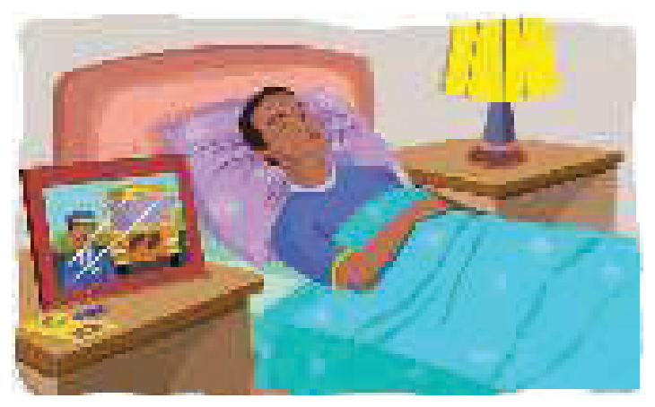

Learning Objectives
- Use the present simple for habits, routines and things that are true in general
- Add -s or -es correctly for he, she and it
- Make questions and negative sentences with do and does
- Say how often things happen
- Do things by saying them: I promise, I suggest, I apologise etc.
Part A — Theory
Study this example situation

Alex is a bus driver, but now he is in bed asleep.
He is not driving a bus. (He is asleep.)
but He drives a bus. He is a bus driver.
drive(s) / work(s) / do(es) etc. is the present simple:
| Subject | Verb |
|---|---|
| I / we / you / they | drive / work / do etc. |
| he / she / it | drives / works / does etc. |
Things in general — all the time, repeatedly, or always true
Nurses look after patients in hospitals.
I usually go away at weekends.
The earth goes round the sun.
The cafe opens at 7.30 in the morning.
We say:
| Subject | Verb | Subject | Verb |
|---|---|---|---|
| I | work | but | he works |
| you | go | but | it goes |
| they | teach | but | my sister teaches |
| I | have | but | he has |
For spelling (-s or -es), see Appendix 6.
Questions and negatives with do / does
| Auxiliary | Subject | Verb |
|---|---|---|
do | I / we / you / they | work? drive? do? |
does | he / she / it | work? drive? do? |
don't | I / we / you / they | work / drive / do |
doesn't | he / she / it | work / drive / do |
Examples
I come from Canada. Where do you come from?
I don't go away very often.
What does this word mean? (not What means this word?)
Rice doesn't grow in cold climates.
When do is also the main verb
'What do you do?' 'I work in a shop.'
He's always so lazy. He doesn't do anything to help.
Saying how often we do things
I get up at 8 o'clock every morning.
How often do you go to the dentist?
Julie doesn't drink tea very often.
Robert usually goes away two or three times a year.
I promise / I apologise etc.
I promise I won't be late. (not I'm promising)
'What do you suggest I do?' 'I suggest that you …'
In the same way we say: I apologise … / I advise … / I insist … / I agree … / I refuse … etc.
Part B — Exercises
Complete the sentences using the following verbs:
- Tanya German very well.
- Ben and Jack to the same school.
- Bad driving many accidents.
- The museum at 4 o'clock on Sundays.
- My parents in a very small flat.
- The Olympic Games place every four years.
- The Panama Canal the Atlantic and Pacific oceans.
Put the verb into the correct form.
Contractions like don't and full forms like do not are both accepted.
- Julia (not / drink) tea very often.
- What time here?
- I have a car, but I it much.
- Where from? Is she Spanish?
- 'What ?' 'I'm an electrician.'
- Look at this sentence. What ?
- David isn't very fit. He any sport.
- It me an hour to get to work in the morning. How long you?
Complete the sentences using these verbs. Sometimes you need the negative.
- The earth round the sun.
- Rice in cold climates.
- The sun in the east.
- Bees honey.
- Vegetarians meat.
- An atheist in God.
- An interpreter from one language into another.
- Liars are people who the truth.
- The River Amazon into the Atlantic Ocean.
You ask Lisa questions about herself and her family. Write the questions.
- You know that Lisa plays tennis. You want to know how often. Ask her.
- Perhaps Lisa's sister plays tennis too. You want to know. Ask Lisa.
- You know that Lisa goes to the cinema a lot. You want to know how often. Ask her.
- You know that Lisa's brother works. You want to know what he does. Ask Lisa.
- You're not sure whether Lisa speaks Spanish. You want to know. Ask her.
- You don't know where Lisa's grandparents live. You want to know. Ask Lisa.
Complete using the following:
- Mr Evans is not in the office today. you try calling him tomorrow.
- I won't tell anybody what you said. .
- (in a restaurant) You must let me pay for the meal. .
- for what I said. I shouldn't have said it.
- The new restaurant in Baker Street is very good. it.
- I think you're absolutely right. with you.
Answer Key
Exercise 2.1 — Complete the sentences
- Tanya speaks German very well.
- Ben and Jack go to the same school.
- Bad driving causes many accidents.
- The museum closes at 4 o'clock on Sundays.
- My parents live in a very small flat.
- The Olympic Games take place every four years.
- The Panama Canal connects the Atlantic and Pacific oceans.
Exercise 2.2 — Correct forms
- Julia doesn't drink / does not drink tea very often.
- What time do the banks close here?
- I have a car, but I don't use / do not use it much.
- Where does Maria come from? Is she Spanish?
- 'What do you do?' 'I'm an electrician.'
- Look at this sentence. What does this word mean?
- David isn't very fit. He doesn't do / does not do any sport.
- It takes me an hour to get to work in the morning. How long does it take you?
Exercise 2.3 — Positive or negative
- The earth goes round the sun.
- Rice doesn't grow / does not grow in cold climates.
- The sun rises in the east.
- Bees make honey.
- Vegetarians don't eat / do not eat meat.
- An atheist doesn't believe / does not believe in God.
- An interpreter translates from one language into another.
- Liars are people who don't tell / do not tell the truth.
- The River Amazon flows into the Atlantic Ocean.
Exercise 2.4 — Questions about Lisa
- How often do you play tennis?
- Does your sister play tennis?
- How often do you go to the cinema?
- What does your brother do?
- Do you speak Spanish?
- Where do your grandparents live?
Exercise 2.5 — I promise, I suggest etc.
- Mr Evans is not in the office today. I suggest you try calling him tomorrow.
- I won't tell anybody what you said. I promise.
- (in a restaurant) You must let me pay for the meal. I insist.
- I apologise for what I said. I shouldn't have said it.
- The new restaurant in Baker Street is very good. I recommend it.
- I think you're absolutely right. I agree with you.
Summary
| Use | Example |
|---|---|
| Things that happen all the time or repeatedly | Nurses look after patients in hospitals. |
| Things that are true in general | The earth goes round the sun. |
| Spelling for he / she / it | I work, but he works. I have, but he has. |
| Questions with do / does | Do you come from Canada? |
| Negatives with don't / doesn't | Rice doesn't grow in cold climates. |
| Saying how often | I get up at 8 o'clock every morning. |
| Doing something by saying it | I promise I won't be late. |